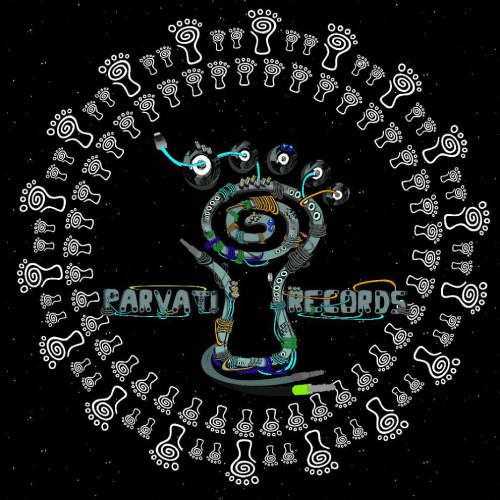
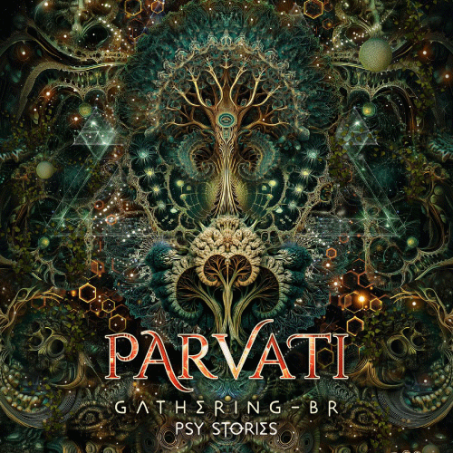

La evolución de Parvati Records no se define por rupturas, sino por continuidad. Desde sus inicios,
el sello construye una identidad basada en la exploración sonora y la coherencia artística, donde
cada lanzamiento dialoga con los anteriores. En lugar de perseguir tendencias externas, el
crecimiento surge de una búsqueda interna: profundizar una visión musical que entiende la psicodelia
como experiencia, proceso y transformación.
A lo largo del tiempo, el proyecto mantiene una dirección clara, permitiendo que el cambio ocurra de
manera natural. La evolución aparece entonces como una expansión progresiva del lenguaje sonoro y
visual, donde cada etapa agrega nuevas capas sin abandonar las raíces culturales que dieron origen
al sello.
Con el paso del tiempo, Parvati Records atraviesa una transformación gradual que se percibe en
la madurez del sonido,
en la coherencia estética y en la forma en que cada lanzamiento se integra a un universo común.
La evolución del sello
no se expresa como un cambio brusco, sino como un refinamiento: más detalle, más profundidad y
una narrativa sonora
construida con paciencia.
Este crecimiento acompaña también una expansión creativa: nuevas voces y colaboraciones se suman
sin romper la identidad
general. Así, la evolución se entiende como un movimiento continuo donde exploración, curaduría
e imagen avanzan juntas,
sosteniendo una experiencia cada vez más inmersiva.

La incorporación de nuevos artistas amplía el catálogo sin romper la identidad del sello. Diferentes perspectivas conviven dentro de un mismo lenguaje estético, fortaleciendo una evolución basada en el diálogo entre tradición e innovación.
La evolución también se expresa en lo visual. El arte gráfico acompaña el desarrollo sonoro, creando una estética reconocible donde imagen y música funcionan como partes de una misma narrativa.

En su etapa actual, Parvati Records continúa expandiendo su identidad sin abandonar la coherencia que define al proyecto. La evolución del sello se manifiesta en una exploración constante donde sonido, estética y experiencia colectiva avanzan juntas. Más que reinventarse, el camino de Parvati consiste en profundizar una visión artística que sigue creciendo junto a su comunidad global.